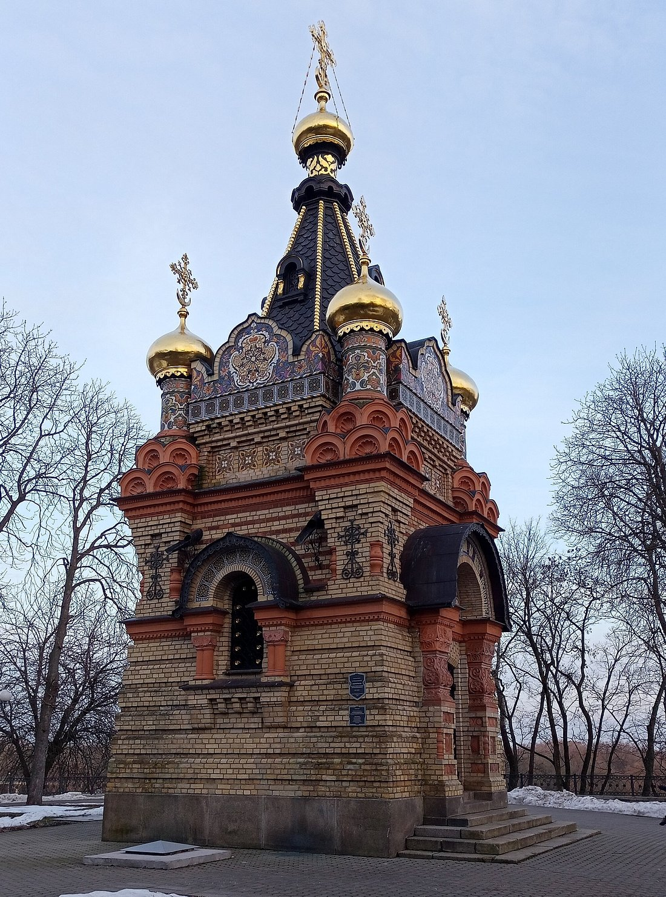

Город Гомель - один из красивейших городов Беларуси, обладающий богатейшим историческим, культурным и научным потенциалом, имеющий свой неповторимый облик и стиль. Это второй по величине областной центр в республике, с развитой промышленностью, наукой, культурой, важный транспортный узел и общественно-политический центр межрегиональных связей. Его выгодное географическое положение является перспективным как для развития отечественного, так и иностранного бизнеса. Гомель является одним из интеллектуальных центров республики, местом проведения крупнейших культурных и спортивных мероприятий. Он открыт для всех форм сотрудничества и всегда верен традициям гостеприимства и радушия. Гомель – город ажурных каштанов, тенистых аллей, широких проспекто– ов, старинных строений и необыкновенных людей, которые по капле вершили и создавали его историю.
Известно, что Гомельщина, самый южный регион Беларуси, в древности более всего подходила для расселения древних людей. Именно на территории нашей области найдены самые древние в республике орудия труда первобытных людей – отрядов первобытных охотников. Первые люди на территории Беларуси появились 100 - 40 тыс. лет тому назад в эпоху среднего палеолита. Вещественные подтверждения этому найдены близ Светиловичей и Подлужья.Первые стоянки первобытных людей на территории Беларуси найдены опять же на Гомельщине.Это деревни Юровичи и Бердыж (24-21 тыс. лет назад). С большой вероятностью можно предполагать о том, что в этот период они расселялись и на территории будущего города вдоль берега Сожа. Однако сколь-нибудь значимых продуктов их жизнедеятельности пока не обнаружено.
Восточнославянское племя радимичей считается основателем нашего города. В Ипатьевской летописи древний Гомий упоминается, как мелкое приграничное поселение под 1142 годом. Эта дата и стала точкой отсчета для города. Однако археологические исследования решительно отодвигают дату возникновения города вглубь веков.Его детинец располагался на мысу, образованном правым берегом р.Сож и левым берегом впадающего в р.Сож ручья Гомиюк (ныне тер. Гомельского парка). С севера и запада к детинцу примыкал окольный город, вокруг которого формировались посады. В 12-13 вв. общая площадь города составляла не менее 40 га. Впервые Гомель упоминается в Ипатьевской летописи как владение Черниговского князя в 1142 в связи с борьбой Ольговичей (потомков черниговского князя Олега Святославича) и Мономаховичей (потомков великого князя киевского Владимира Мономаха) за обладание великокняжеским престолом в Киеве.
| 2006 | 2010 | 2020 | 2023 |
| 481 976чел. | 493 988чел. | 510 243чел. | 501 452чел. |
| Переход на другую страницу | |||
Дворец Румянцевых-Паскевичей — архитектурный памятник XVIII–XIX веков, находится в центре города на берегу реки Сож. Название дворца состоит из фамилий его бывших хозяев, известных военных и государственных деятелей: генерал-фельдмаршала П. А. Румянцева и русского полководца И. Ф. Паскевича.
Сегодня дворец превращен в музей и его могут посетить все желающие. Гостям показывают Колонный зал, Красную гостиную, Зал для торжественных приемов с картинной галереей, Белую гостиную и все экспозиции в этих помещениях.
Усыпальница Паскевичей, одна из достопримечательностей дворцово-паркового ансамбля Гомеля. Постоена в конце 19 века, в форме шатровых пятиглавых церквей, в псевдорусском стиле. Красива множеством элементов, узоров, позолотой и цветным исполнением в духе византии.
В усыпальнице непосредственно захоронен сам князь Паскевич, его жена и родственники. Вековые деревья, цветочное оформление и вид со смотровой плащадки у усыпальницы на реку Сож, место в центре города, где не слышло шума машин и свежий воздух. Рядом расположен кафедральный собор Петра и Павла.